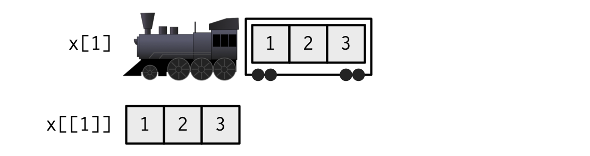

[1] "integer"[1] TRUE[1] FALSE[1] TRUER2026-02-15
tidyverse approach to coding in Rtidyverse ecosystem can be used to identify variables, clean data, perform descriptive and inferential analyses, and present statistical outputsRtidyverseRtidyverseRNCDSID or ncdsidMCSID & XCNUM00 (where X a letter indicating sweep)mcsx_[respondent]_[collection_type].dta).R?RR Data StructuresR can hold many objects at once.data.frames, and tibbles, the tidyverse version of data.frames.double: Numbers with ability to store decimal places (e.g. c(2.49, 1, 3/2))integer: A round number. Denoted using L operator (e.g. c(1L, 54L, 800L)).character: Strings, such as "I said 'Hello'" and "My name is Liam".logical: Boolean values TRUE or FALSEtypeof() or is.type() functions.R is a vectorised languagedata.framesdata.frames are in fact special types of list
data.frames can contain columns that are lists (list-columns).[ ] operator after the vector name.TRUE/FALSE), or names (if the vector has names).[ ] can also be used to subset lists. This creates a new list[[ ]] can be used to extract a$ can also be used for extraction, and allows partial matching.
Wickham, 2019: Advanced R
data.frameslists[ ] returns a da.frame with specified columns[[ ]] and $ extract a single column[rows, columns] subset specified rows and columns.
data.frames[, single_column] returns a vector, not a data.frametibbles (tidyverse’s data.frames) do not do this.==: Equal to!=: Not equal to<: Less than>: Greater than<=: Less than or equal to>=: Greater than or equal to%in%: Element of (e.g., ages %in% c(10, 30)).
between(x, lower, upper): x >= lower and x <= upper&: Logical AND (e.g., ages >= 20 & ages <= 30)|: Logical OR (e.g., ages < 15 | ages > 25)!: Logical NOT (e.g., !(ages >= 20 & ages <= 30))R’s Missing Value, NANA in RNA return NA%in% operator which searches for NA’s.R’s Missing Value, NAna.omit()is.na() can be used to identify NA valuesNA.which(logical_vector): Returns the indices where the logical vector equals TRUE.match(vector, table): Returns a vector of the positions of (first) matches of a vector in another. The function returns NA for non-matches.seq(from, to, by): Generates a sequence of numbers from from to to, incrementing by by.my_list object above to create a new list that contains only the third and first elements (in that order) of the letters sub-object.my_df.my_list object above to create a new list that contains only the third and first elements (in that order) of the letters sub-object.my_df.